A {{ page.title }} slices a large quantity order into smaller disclosed order portions for a specified duration to achieve the total goal quantity; child order portions are entered into the market based on an interval or disclosed quantity.
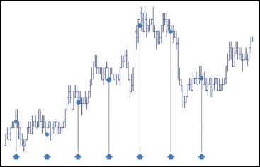
A {{ page.title }} defines the total time desired to achieve the total goal quantity. You can set either the total time or specific begin and end times. When specific begin and end times are entered, the difference between the two is calculated to determine the total time duration for the order. Child order portions are submitted during the specified time duration to achieve the total goal quantity.
Behaviors
The following examples illustrate how you can configure a {{ page.title }} with different behaviors for the child and parent orders. Also, each example shows how the order will appear in MD Trader.
-
Determining the size of and interval for submitting child orders
-
Specifying the price at when child orders are entered
-
Setting preconditions for the parent order
{% comment %}
{% endcomment %}
Calculating the disclosed quantity based on a specified interval and duration
You can let the {{ page.title }} calculate the size and number of child order slices by specifying how frequently you want to submit child orders and over what period of time. The {{ page.title }} divides the specified duration for the parent order by the specified interval to calculate the number of order slices it needs to send; then it divides the total parent order quantity by the calculated number of slices to determine the disclosed quantity for each child order.
The following example shows how to use the interval and duration to caluclate the number and quantity of child orders. In this case, we want the TT Time Duration parent order to submit one child order every 30 seconds over the next 10 minutes.
-
From the Slice Type dropdown, select Interval.
-
In the Interval field, enter the length of the invterval and select the desired time units for the interval. You can choose hour, minutes or milliseconds.
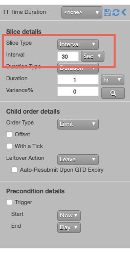
In this case, you set the interval to 30 seconds.
-
From the Duration Type dropdown, select Duration.
-
In the Duration field, enter the length of the duration and select the desired time units for the duration.
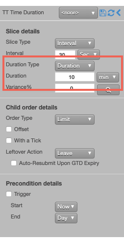
In this case, you set the duration to 10 minutes.
Calculating the interval based on a disclosed quantity spread over a specified duration
The {{ page.title}} also lets you specify a the size of its child orders and let it calculate the number and frequency of the intervals needed to achieve the total order quantity. The {{ page.title }} divides the specified disclosed for the parent order by the specified total order quantity to calculate the number of order slices it needs to send; then it divides the total parent order quantity by the calculated number of slices to determine the interval for each child order.
The following example shows how to use the disclosed quantity and duration to caluclate the number and quantity of child orders. In this case, we want the TT Time Duration parent order to work a 100-lot order over the course of 10 minutes using 10-lot child orders. The {{ page.title }} will, therefore, submit one child order every minute for the order duration.
-
From the Slice Type dropdown, select Disclose.
-
In the Disclose field, enter the desired order quantity and choose either Qty or % from the dropdown.
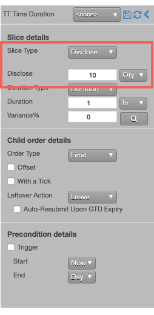
In this case, you set the dislosed quantity to 10 lots.
-
From the Duration Type dropdown, select Duration.
-
In the Duration field, enter the length of the duration and select the desired time units for the duration.
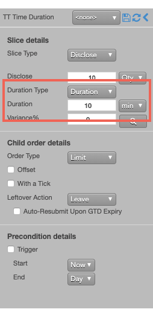
In this case, you set the duration to 10 minutes.
Varying the quantity of each child order slice
Instead of submitting a fixed quantity for every child you can use a variance to increase or reduce the quantity of each child order by a percentage of the disclosed quantity.
To vary the disclosed quantity by a percentage of the order size:
-
Set the desired Slice Type and Duration Type details.
-
Set the Variance and select % from the dropdown. This example sets the variance to 40%, so each child order could have an order quantity within 40% (+/- 4) of the base disclosed quantity.
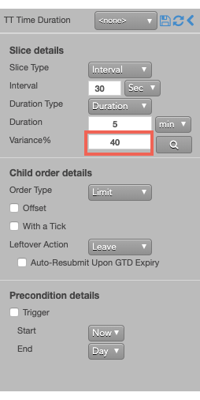
-
To see a proposed distribution of the child orders, click . Note: You must specify the order quantity to see the distribution.
A flyout shows the quantity of each child order that will be sent when you submit the parent order.
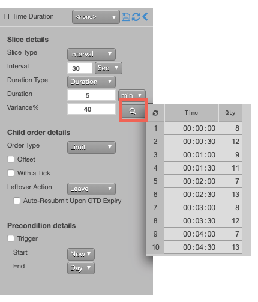
If you want to change the proposed distribution, you can continue to click until you see a distribution you like.
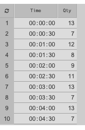
Note: If you do not display the variance, or if you make any order change after displaying the variance distribution, the TT Iceberg parent order will submit its child orders with random quantities within the specified variance until the total order quantity has been filled.
-
Submit the order at the desired side and price.
If you entered a 100 lot oder with these settings, the TT Time Duration parent order would submit a child order for the first quantity (13). Tben, a new child order would be entered with the indicated time and quantity until all of the slices were submitted.
-
Submit the order at the desired side and price.
If you submitted a Sell order for 101 contracts at 27190, the TT Time Duration parent order would resemble the following:
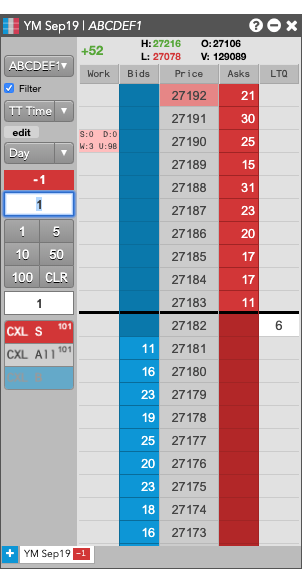
-
The disclosed quantity (D:3) verifies that the base order quantity for each slice is 20.
-
The working quantity (W:98) shows the slice order quantity is 3, which indicates a -2% variance.
-
The remaining undisclosed quantity (U:) shows the remaining parent order quantity is 84.
After the each order slice is fully filled, the TT Iceberg will submit the next order at 27190 until the total order quantity has been filled.
Setting the type and price of the child order
At the specified intervals, the TT Time Duration parent order will submit native child orders to the market at a specied type and price. You can choose the following types of native order to use when entering child orders at the specified interval.
-
Market order
-
Limit order
You can choose to use same price as the parent order for each child order or to use a price offset based on the market at the time each child order is entered.
-
Market Limit Market (MLM) order
To configure the type and price of each child order:
-
In the Slice details section, configure the slices as desired.
-
In the Order Type dropdown, select the desired order type for the child orders.
If you select Limit, you can optionally specify enter a child order at a relative price using an offset.
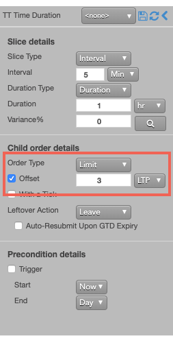
With this setting, each child order will be entered at a price level three ticks away from the LTP at the beginning of the slice interval.
Setting a leftover action to handle unfilled orders when a slice ends
When it is time to enter the next child order slice, the TT Time Sliced parent order needs to know do if the current child order slice is not fully filled. When you submit child orders with the Limit order type, you can specify a leftover action, which lets you either reprice the resting order using payup ticks or leave the resting child order portion in the market.
-
Configure the Slice details as desired.
-
From the Order Type dropdown, select Limit.
The Leftover Action section is exposed in the flyout.

-
Choose one of the following:
-
Leave
-
Payup; then specify a positive or negative number of Payup Ticks.
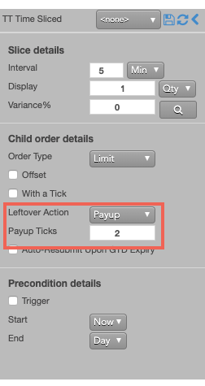
The following example illustrates using payup ticks.
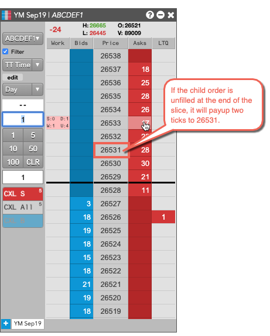
{% include tto-wat-params.html %}
{% include tto-static-trigger-params.html %}
{% include tto-trailing-trigger-params.html %}
{% include tto-time-params.html %}
Time Duration order parameters
Time Duration parameters can be set as either a time interval or disclosed quantity. Time Interval (the default) sets the time between each disclosed order portion in minutes, seconds, or milliseconds. The TT system calculates child order portions needed to achieve the total goal quantity in the specified time duration.
Slice details parameters
-
Slice Type — Whether to set the duration based on:
-
Interval — Time between each disclosed order portion in minutes, seconds, or milliseconds.
- Min (minutes)
- Sec (seconds)
- ms (milliseconds)
-
Disclose — Percentage of total order quantity or a fixed number viewable in the market.
- Qty for a specific number of contracts
- % for a percentage of the total order
When the displayed quantity is specified as a percentage:
- If the quantity is less than 1, the quantity rounds up to 1.
- If the fractional portion is less than .5 (e.g. 3.2), the quantity rounds down.
- If the fractional portion is greater than .5 (e.g. 3.7), the quantity rounds up.
- If the fractional portion is exactly .5, the quantity rounds up.
-
Duration Type — Whether to base the duration on:
-
Duration — Length of time, as:
-
StartEnd — Specific time range, as:
- Start — When to start submitting orders.
- End — When to stop submitting orders.
-
Variance — Percentage by which to vary the disclosed order portion.
Child order details parameters
Order type — Type of exchange-native order to use for the order. Possible values include:
-
Limit — Enter the child order at a specific price.
- Market — Enter the child order at the inside market.
When Order type is Limit, the following parameters are exposed:
- {% include Parameters/OffsetTicks_Details.html %}
- {% include Parameters/WithATick.html %}
- {% include Parameters/LeftoverAction_Details.html%}
Precondition details parameters
- {% include Parameters/TriggerType_Details.html%}
- {% include Parameters/TriggerPrice_Details.html%}
- {% include Parameters/TrailOffset.html%}
- {% include Parameters/StartTime_Details.html %}
- {% include Parameters/EndTime_Details.html %}
- {% include Parameters/EndTimeAction_Details.html %}
-
At End Action — Sets the action to take for any unfilled balance when the End time is reached.
(Visible only for a custom End time) Possible values include:
- Cancel to delete the remaining contracts
-
Go to Market to reprice the unfilled quantity as a Market Limit order
- Mkt Limit Ticks: Number of ticks into the market to submit the Market Limit order